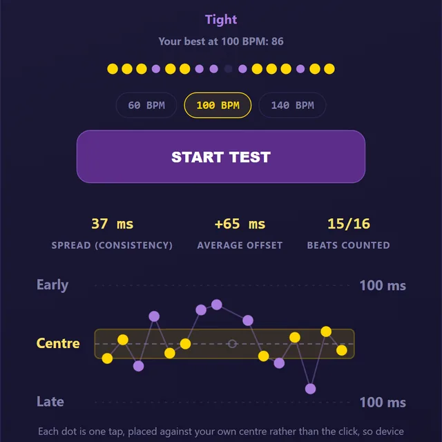
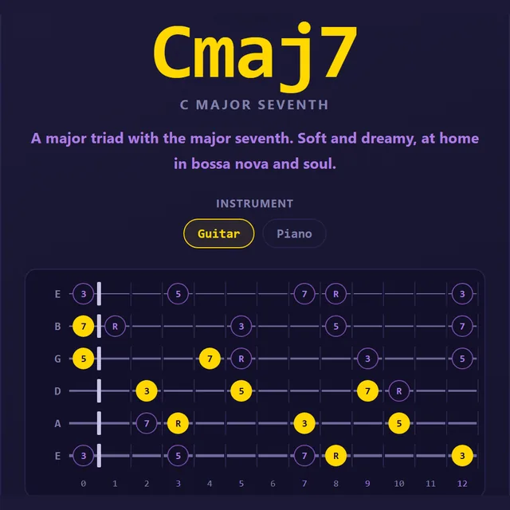
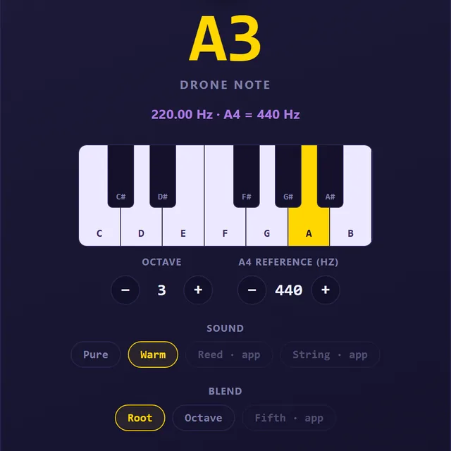
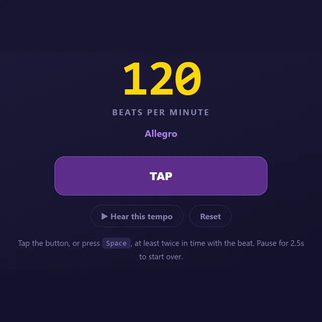
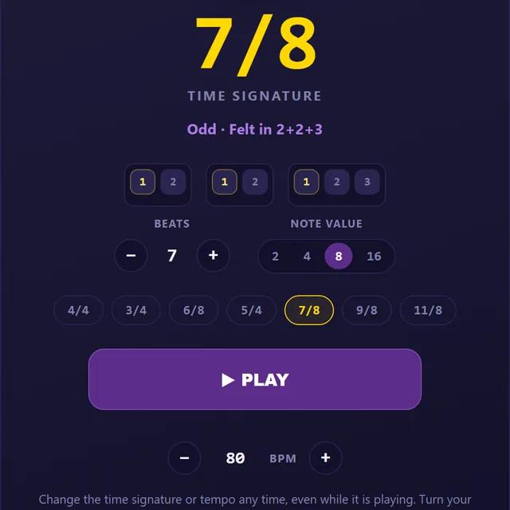
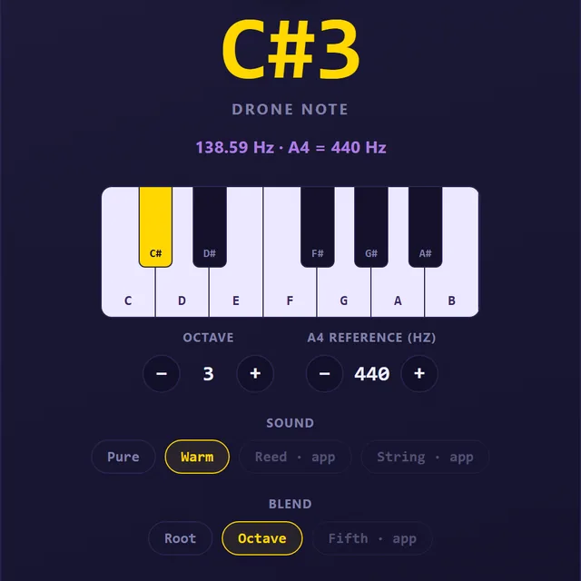

Timing
Rhythm Test
Tap along for 16 beats and get a timing score out of 100, your spread in milliseconds, and whether you rush or drag.
Open the rhythm testTools
Quick browser tools for musicians. No download, no account, no cost. Just open one and use it.

Timing
Tap along for 16 beats and get a timing score out of 100, your spread in milliseconds, and whether you rush or drag.
Open the rhythm test
Chords
Tap the notes on a guitar or piano and get the chord name, every note spelled from its root, and hear it played back.
Open the chord finder
Intonation
Hold any note from C2 to B5 at any reference pitch and tune your playing against it by ear.
Open the tuning drone
Tempo
Tap along with a song to find its BPM and tempo marking, then hear it back as a steady click.
Open the BPM finder
Time signatures
Pick any time signature up to 13/8 and hear it clicked with its natural accents, group by group.
Open the odd meter metronome
Indian classical
Pick your Sa and hold it as a steady drone with the upper Sa added, like a tanpura, for swara practice.
Open the shruti boxGuides
One page per meter: what it means, how to count it, how it feels, songs that use it, and the odd meter metronome already set to it.